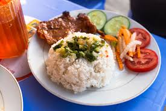

Home
Com Tam Viet Nam

Mo ta mon an
Mẹt bún đầy đặn với đậu hũ chiên giòn, thịt luộc mềm mọng quyện cùng mắm tôm đánh bông đậm đà. Một sự kết hợp bùng nổ vị giác, chuẩn vị đường phố.
Hương vị truyền thống gói gọn trong chiếc mẹt tre: bún lá thanh mát, chả cốm dẻo thơm và đậu rán vàng ươm. Đơn giản, tinh tế và gây nghiện.
Ingredients
- bun
- dau
- mam tom
- rau
- thit luoc
- nem chien
- cha com
Cac buoc nau an
- Sơ chế và làm sạch các loại nguyên liệu, gia vị.
- Ướp nguyên liệu với gia vị trong 15-20 phút để ngấm đều.
- Làm nóng chảo, phi thơm hành tỏi và bắt đầu chế biến nhiệt.
- Nêm nếm lại cho vừa khẩu vị và thêm các loại rau thơm.
- Trình bày ra đĩa, trang trí bắt mắt và thưởng thức.